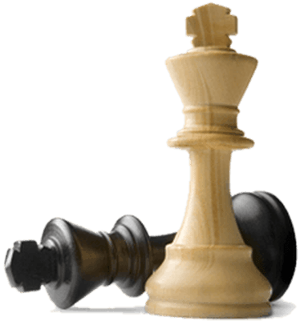

Jucătorii noștrii
Место рождения:
Кишинёв, Молдавская ССР, СССР
Кишинёв, Молдавская ССР, СССР
Дата рождения:
14 декабря 1971 (49 лет)
14 декабря 1971 (49 лет)
Звание:
гроссмейстер (1991) международный мастер (1990)
гроссмейстер (1991) международный мастер (1990)
Максимальный рейтинг:
2734 (август 2012)
2734 (август 2012)
Актуальный рейтинг:
2574
Личная карточка на сайте ФИДЕ
2574

